Soup-centered meals
Vegetables for volume, protein for muscle, herbs and acid for flavor, portions for progress.
A living fitness book
Not a crash diet. Not a perfect-person plan. A real system built around satisfying soup, strength at home, better recovery and honest tracking.

Why this exists
For nearly a year, the scale kept circling the 190s. High protein alone did not fix it. Starving until dinner made the evening worse. So the goal changed: build a system that is filling, repeatable, measurable and strong enough for real life.
“Build the habit. Uncover the body. Document the journey.”
The KaluzyFit method
Vegetables for volume, protein for muscle, herbs and acid for flavor, portions for progress.
A bench, yoga mat and two 25-pound dumbbells are enough to build momentum.
Walking supports the calorie deficit, digestion, mood and consistency.
Sleep, hydration, minimum-day workouts and planned enjoyment keep one hard day from becoming a lost week.
Use weekly averages, waist measurements, steps, sleep and adherence. Change one variable at a time.
Original infographic library
Tap any image to open it full-size. These are the original infographic files you uploaded, not replacement icons.
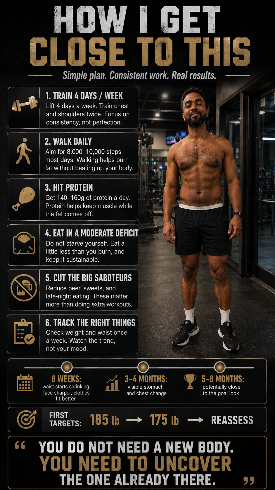
The core formula: lift, walk, protein, calorie control, and patience.
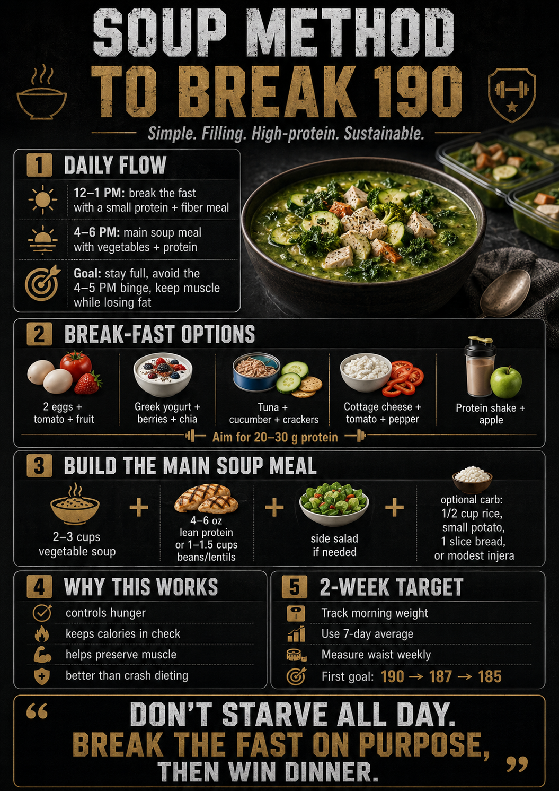
The visual framework for using soup as the anchor meal.
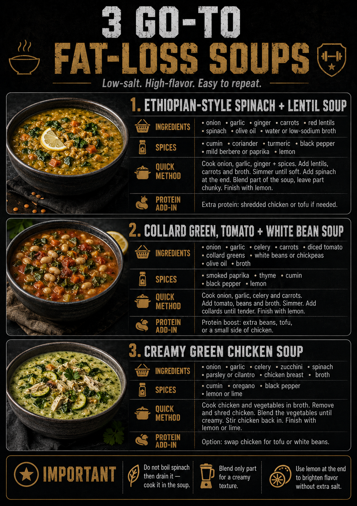
Three soup ideas with structure, ingredients, and protein balance.
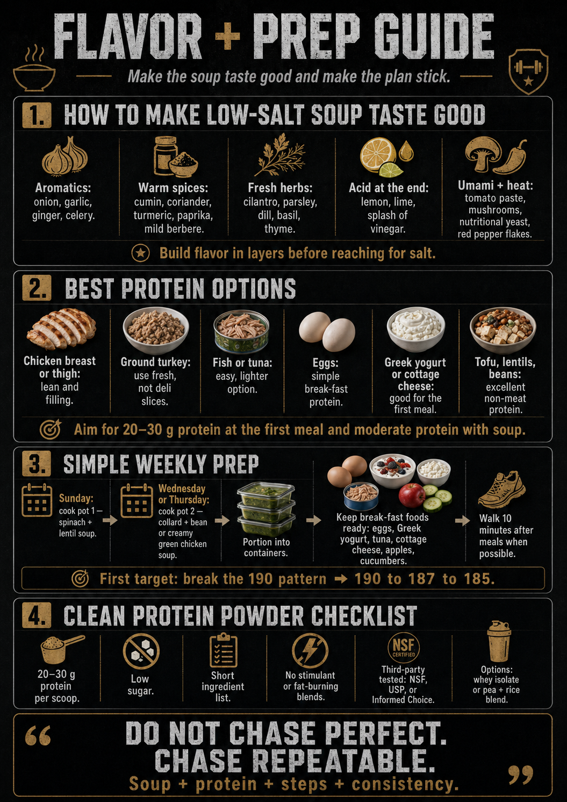
Herbs, spices, low-sodium flavor tricks, and meal prep rhythm.
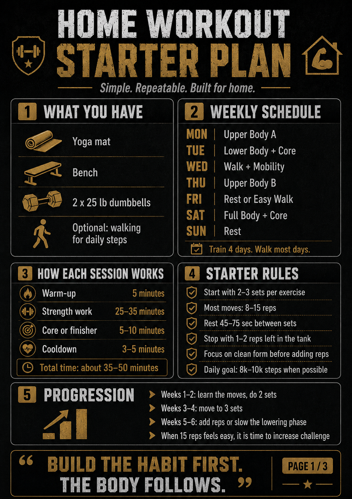
The house-first workout plan using your bench, mat, and dumbbells.
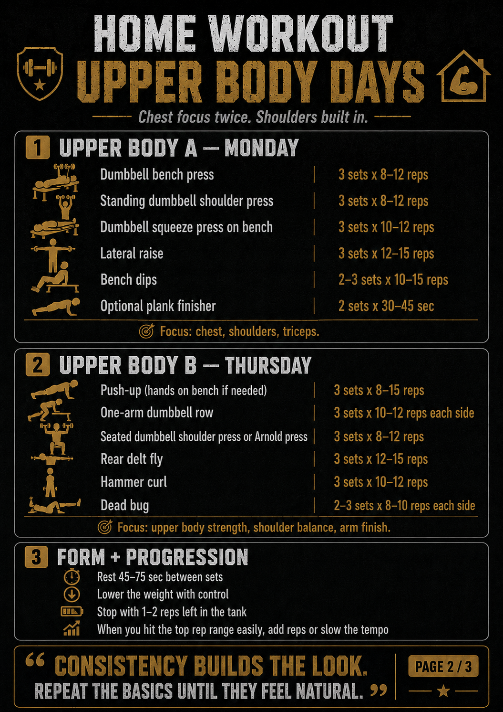
Readable sets, reps, and flow for chest, shoulders, and arms.
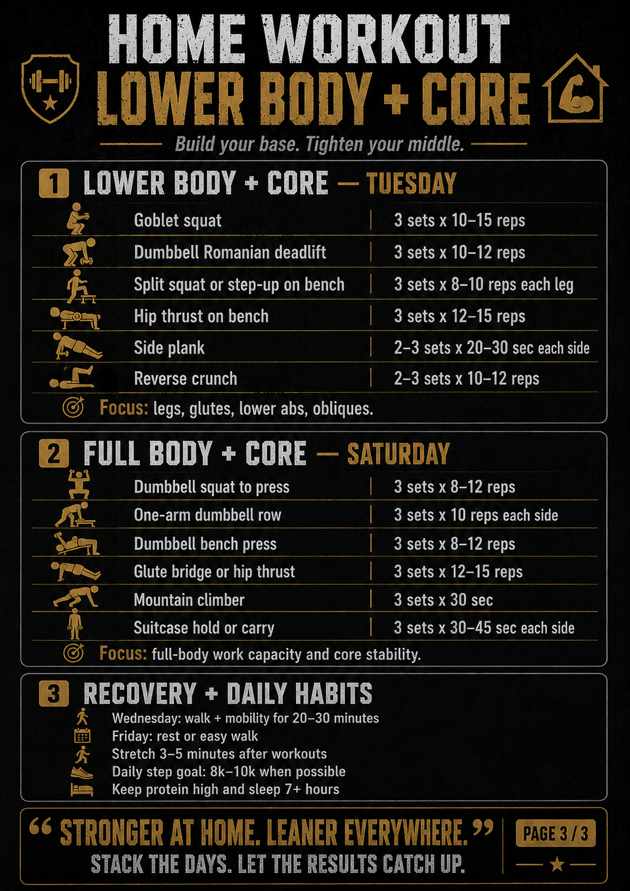
A lower-body companion with mobility and step support.
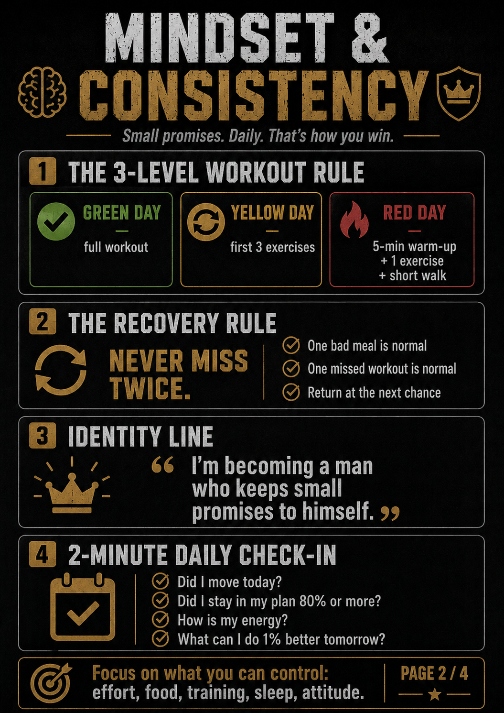
Green, yellow, and red days. Never miss twice.
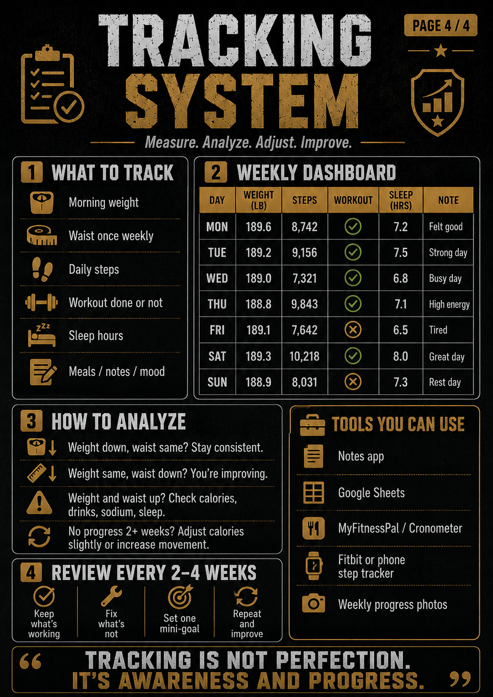
The scorecard: what to log, what to analyze, and how to adjust.
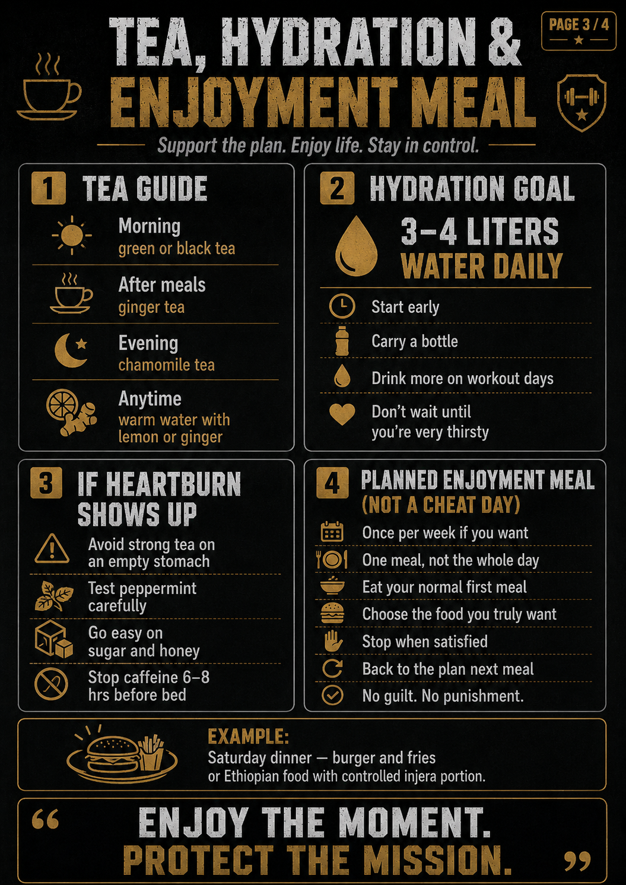
Smart tea choices, hydration, and how to enjoy food without losing the week.
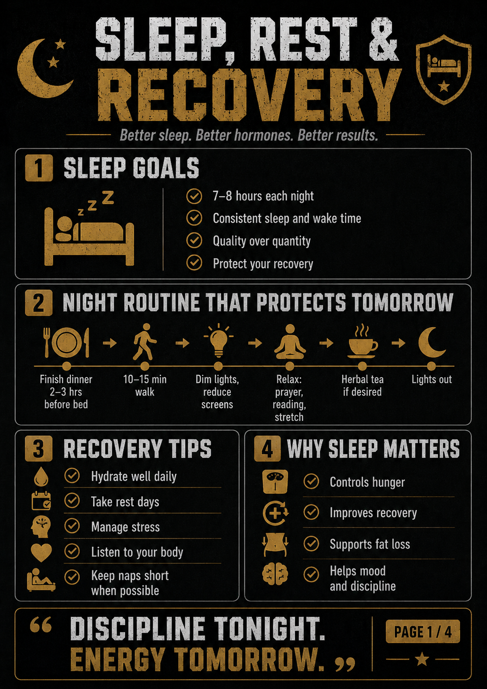
The routine that protects tomorrow’s energy and training.
Live tracking dashboard
Your entries stay in this browser on this device. Export them as a CSV whenever you want a spreadsheet copy.
| Date | Weight | Waist | Steps | Workout | Sleep | Plan | Notes |
|---|
Downloads
Download the real Excel tracker and use it alongside the live site tracker.
Excel workbook with a dashboard, 90-day daily log, measurements, weekly review, inventory and grocery list, and the future book roadmap.
Version 1.2
Real meals. Real workouts. Real data. Real adjustments.
Back to the beginning